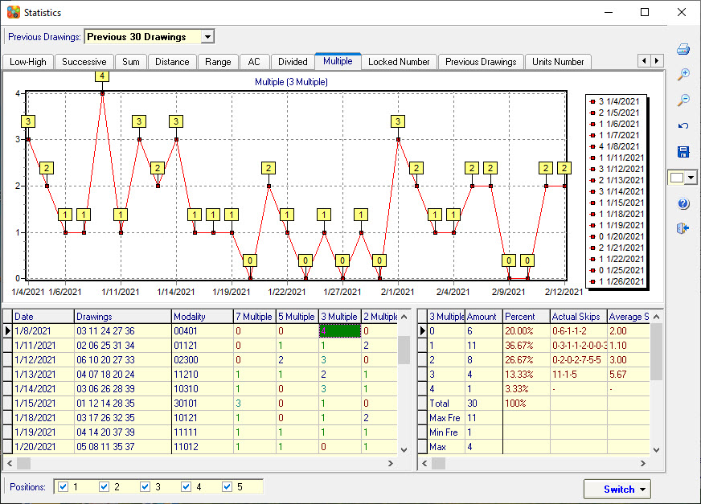

Multiple Analysis |
Click menu->Statistics->Multiple to open the Multiple
analysis.
Divide all the numbers by 7, 5, 3, 2, 1 with a remainder of 0 as the number group. then counts the number of hits of each number group.
From 1-70, multiples of 7 numbers 07 14 21 28 35 42 49 56 63 70.
Multiples of 5 numbers 05 10 15 20 25 30 40 45 50 55 60 65.
Multiples of 3 numbers 03 06 09 12 18 24 27 33 36 39 48 51 54 57 66 69.
Multiples of 2 numbers 02 04 08 16 22 26 32 34 38 44 46 52 58 62 64 68.
Multiples of 1 numbers 01 11 13 17 19 23 29 31 37 41 43 47 53 59 61 67.
7 Multiple: Counting the winning number of hits in the multiples of 7 numbers.
5 Multiple: Counting the winning number of hits in the multiples of 5 numbers.
3 Multiple: Counting the winning number of hits in the multiples of 3 numbers.
2 Multiple: Counting the winning number of hits in the multiples of 2 numbers.
1 Multiple: Counting the winning number of hits in the multiples of 1 numbers.
Modality: Show current number combination divided by 7, 5, 3, 2, 1 reminder of 0 numbers pattern. For example, 7 Multiple =2, 5 Multiple=1, 3 Multiple=2, 2 Multiple=0, 1 Multiple=0, so modality=21200.
Note: In the order of Multiple 7, 5, 3, 2, 1. If the number is Multiple by the previous number, it will not be added to another group. For example, 35 is Multiple by 7 and Multiple by 5. Because 7 is in front, 35 will no longer be added to the 5 Multiple numbers group.

Home
Page: http://www.samlotto.com
Support:support@samlotto.com
Copyright: © SamLotto Lottery Software Team All rights reserved.